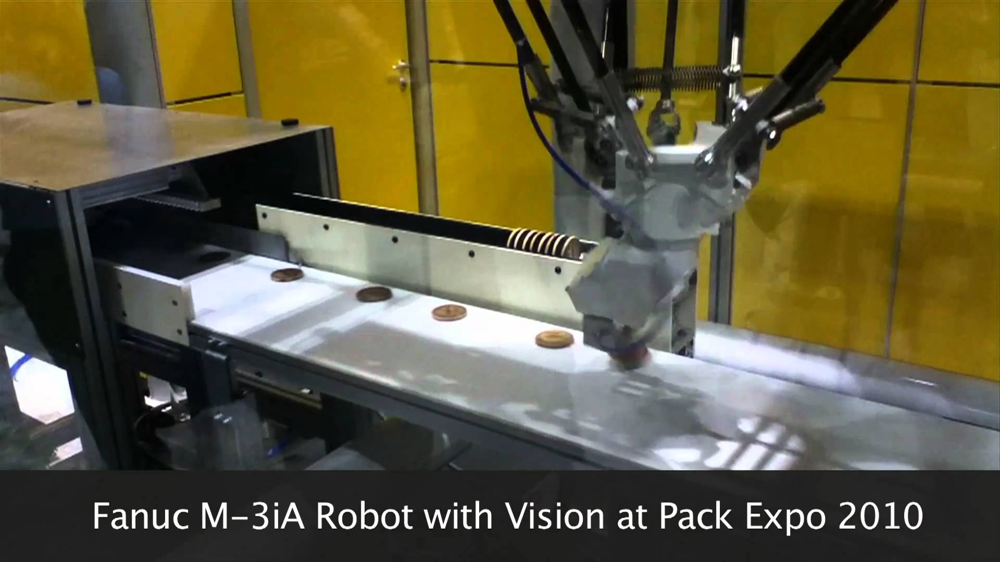

This robot is a Fanuc M-3iA pick and place robot. The picture shows it demonstrating its capabilities
on what appear to be cookies of some sort. It also appears in a Youtube video here.
- Sense:
In order to pick up each object and place it in the correct spot, this robot uses a computer vision
system to detect the location of each object
- Plan:
To move an object from the conveyor belt to the storage rack on the side, the robot needs to decide
on a motion path that reaches the object, grabs the object, and then moves it from the belt to the rack.
- Act:
The pysical design of this robot uses three supports to move a gripper around its work area. It is capable
of moving quickly and precisely to pick up and set down objects.